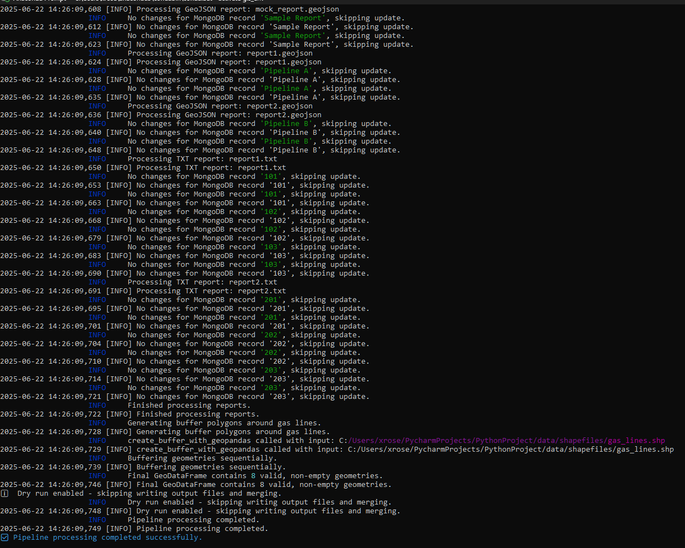
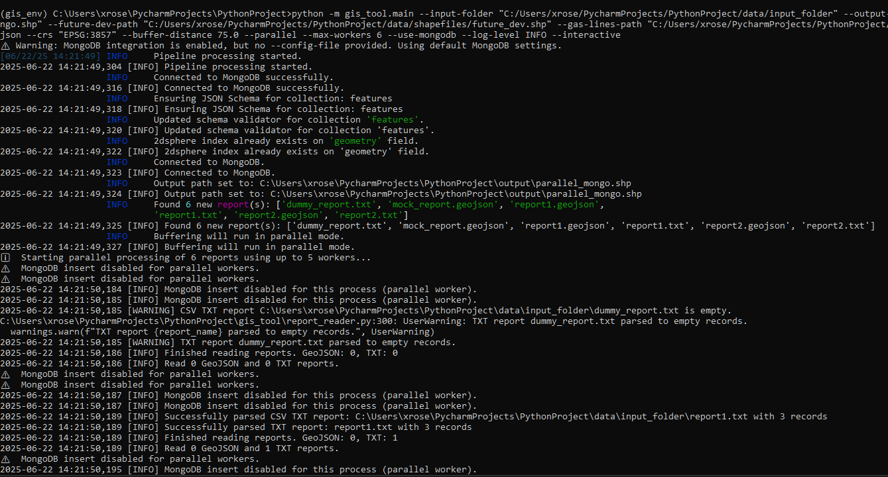
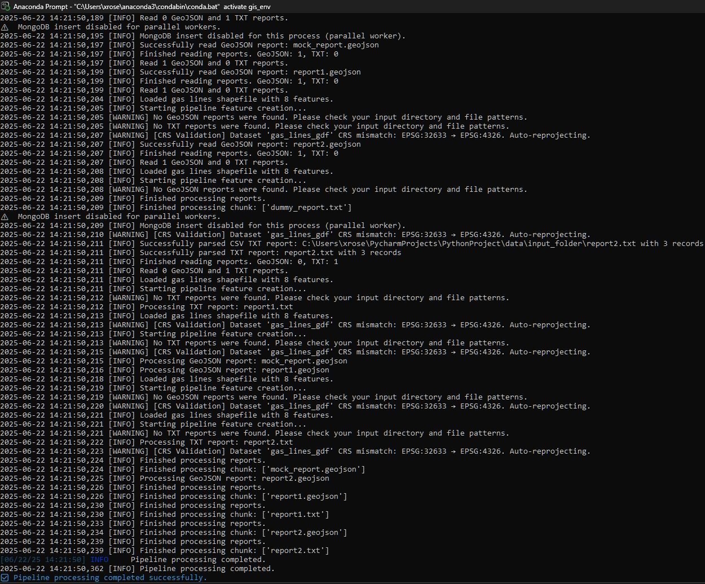

This mode performs full validation of CLI inputs, MongoDB schema, file paths, and projections without modifying data. Used for safe previews and testing.

python -m gis_tool.main --input-folder "C:/Users/xrose/PycharmProjects/PythonProject/data/input_folder" \
--output-path "C:/Users/xrose/PycharmProjects/PythonProject/output/buffer_output.shp" \
--future-dev-path "C:/Users/xrose/PycharmProjects/PythonProject/data/shapefiles/future_dev.shp" \
--gas-lines-path "C:/Users/xrose/PycharmProjects/PythonProject/data/shapefiles/gas_lines.shp" \
--report-files report1.txt report2.geojson --dry-run --verbose --overwrite
Examples showing typical command-line runs without MongoDB integration or with basic parallel processing.
 
python -m gis_tool.main --input-folder "C:/Users/xrose/PycharmProjects/PythonProject/data/input_folder" \
--output-path "C:/Users/xrose/PycharmProjects/PythonProject/output/buffer_output.shp" \
--future-dev-path "C:/Users/xrose/PycharmProjects/PythonProject/data/shapefiles/future_dev.shp" \
--gas-lines-path "C:/Users/xrose/PycharmProjects/PythonProject/data/shapefiles/gas_lines.shp" \
--report-files report1.txt report2.geojson --buffer-distance 50.0 --crs "EPSG:32633" --interactive
Using multiprocessing to process many reports efficiently with a live progress bar displayed by rich.progress
python -m gis_tool.main --input-folder "C:/Users/xrose/PycharmProjects/PythonProject/data/input_folder" \
--output-path "C:/Users/xrose/PycharmProjects/PythonProject/output/parallel_mongo.shp" \
--future-dev-path "C:/Users/xrose/PycharmProjects/PythonProject/data/shapefiles/future_dev.shp" \
--gas-lines-path "C:/Users/xrose/PycharmProjects/PythonProject/data/shapefiles/gas_lines.shp" \
--report-files report1.txt report2.geojson --crs "EPSG:3857" --buffer-distance 75.0 --parallel --max-workers 6 \
--use-mongodb --log-level INFO --overwrite